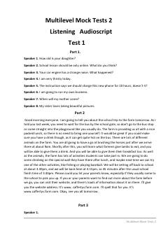

MMMultilevel imtihonining listening bo'limi uchun topshiriqlar va audio matnlar to'plami.
Ushbu manba ingliz tili bo'yicha Multilevel imtihonining tinglab tushunish (listening) bo'limi uchun tayyorlangan test matnlari (audioscript) to'plamidir. Unda turli mavzulardagi suhbatlar, ma'ruzalar va topshiriqlar matnlari o'rin olgan. Imtihonga mustaqil tayyorlanish va tinglash ko'nikmasini oshirish uchun xizmat qiladi.